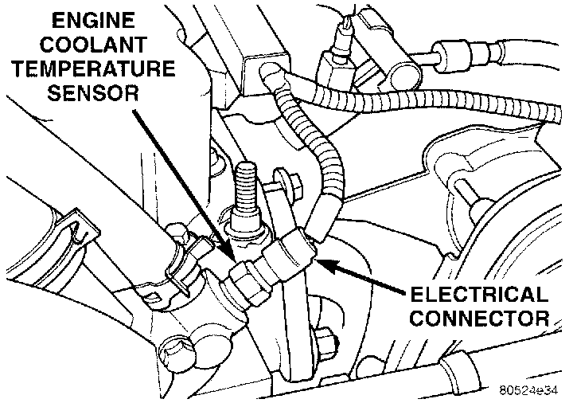

Coolant Temperature Sensor/Switch (For Computer): Description and Operation
ENGINE COOLANT TEMPERATURE SENSOR-PCM INPUTFig. 7 ECT Sensor - 4.0:

The engine coolant temperature sensor is installed in the thermostat housing (Fig. 7) and protrudes into the water jacket. The sensor provides an input voltage to the Powertrain Control Module (PCM) relating coolant temperature. The PCM uses this input along with inputs from other sensors to determine injector pulse width and ignition timing. As coolant temperature varies, the coolant temperature sensor resistance changes. The change in resistance results in a different input voltage to the PCM.
When the engine is cold, the PCM will operate in Open Loop cycle. It will demand slightly richer air-fuel mixtures and higher idle speeds. This is done until normal operating temperatures are reached.
CIRCUIT OPERATION
The engine coolant temperature sensor provides an input to the Powertrain Control Module (PCM) on circuit K2. From circuit K2, the engine coolant temperature sensor draws up to 5 Volts from the PCM. The sensor is a variable resistor. As coolant temperature changes, the resistance in the sensor changes, causing a change in current draw. The K2 circuit connects to cavity A16 of the PCM.
The PCM provides a ground for the engine coolant temperature sensor signal (circuit K2) through circuit K4. Circuit K4 connects to cavity A4 of the PCM connector.